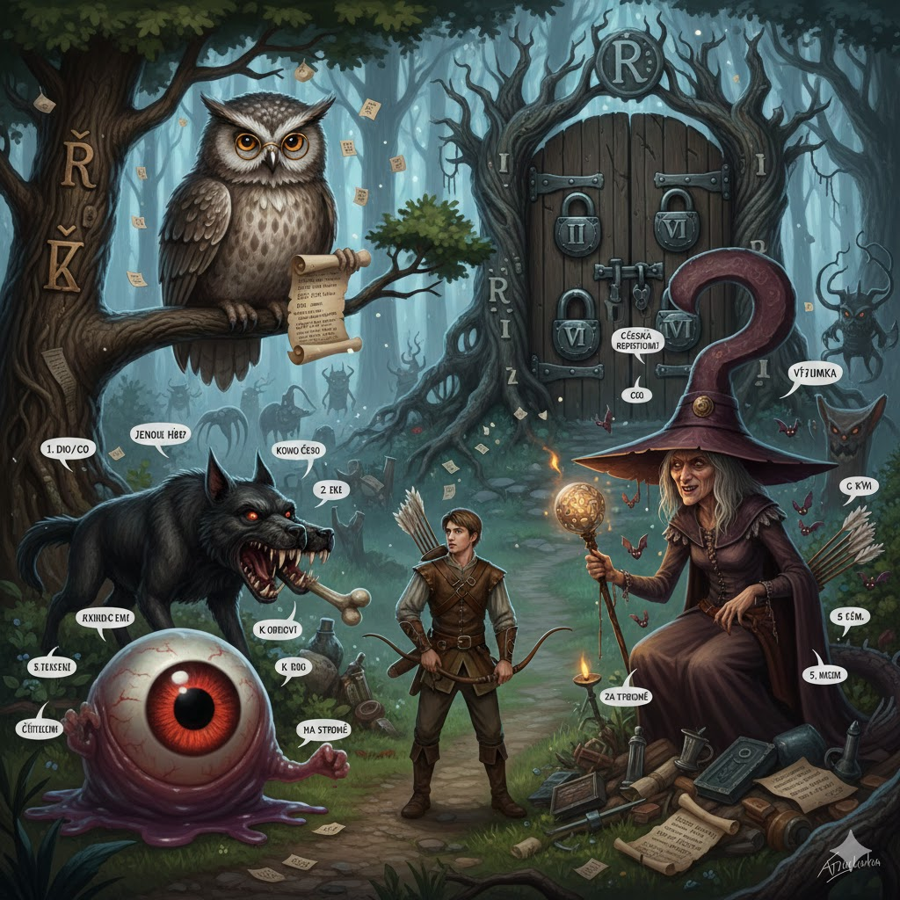

Za sedmero horami a sedmero řekami žil byl statečný lovec, který byl zamilovaný do princezny. Ale stará zlá čarodějnice zvaná Gramatika začarovala princeznu, a tak princezna musí od té doby žít v temném lese skloňování. Moudrá sova Slovnice ti ukáže cestu, ale neumíš soví jazyk, proto ti dá nápovědy. Musíš porazit příšery, abys princeznu zachránil!
Úvod A1: Miluješ princeznu. Musíš jít k princezně. Na cestě budou otázky.